<title>DesignMaxxing Film Storyboards</title>
<link rel="preconnect" href="https://fonts.googleapis.com">
<link rel="preconnect" href="https://fonts.gstatic.com" crossorigin>
<link href="https://fonts.googleapis.com/css2?family=Bricolage+Grotesque:opsz,wght@12..96,400..700&family=Geist:wght@400;500;600&family=Geist+Mono:wght@400;500&display=swap" rel="stylesheet">
<style>
:root { color-scheme: light; --bg: #faf8f3; --fg: #0a0b0d; --fg2: #3c4046; --fg3: #6b7077; --line: #e7e5df; --card: #fff; --blue: #2f55ff; --lime: #dcf36b; }
* { box-sizing: border-box; }
body { margin: 0; background: var(--bg); color: var(--fg); font: 16px/1.55 "Geist", system-ui, sans-serif; -webkit-font-smoothing: antialiased; }
.wrap { max-width: 1160px; margin: 0 auto; padding-inline: 20px; }
header { padding-block: 56px 24px; }
h1, h2 { font-family: "Bricolage Grotesque", sans-serif; letter-spacing: -.035em; margin: 0; text-wrap: balance; }
h1 { font-size: clamp(2rem, 4vw, 3.2rem); line-height: 1.02; }
h2 { font-size: clamp(1.5rem, 2.4vw, 2.1rem); }
.lead { color: var(--fg2); max-width: 62ch; margin: 14px 0 0; }
.mono { font: 500 11.5px/1.3 "Geist Mono", monospace; letter-spacing: .08em; text-transform: uppercase; color: var(--fg3); }
.note { margin-top: 22px; padding: 16px 18px; border-radius: 14px; background: var(--card); box-shadow: 0 1px 2px rgba(10,11,13,.05), 0 12px 30px rgba(30,40,90,.06); max-width: 78ch; }
.note ul { margin: 8px 0 0; padding-left: 18px; }
nav.toc { display: flex; flex-wrap: wrap; gap: 8px; margin-top: 22px; }
nav.toc a { color: var(--fg); text-decoration: none; padding: 7px 13px; border-radius: 999px; background: var(--card); box-shadow: 0 1px 2px rgba(10,11,13,.05), 0 6px 16px rgba(30,40,90,.06); font-size: 14px; }
section.film { padding-block: 44px; border-top: 1px solid var(--line); }
.fhead { display: grid; grid-template-columns: minmax(0, 1fr) auto; gap: 16px; align-items: end; }
.tags { display: flex; flex-wrap: wrap; gap: 6px; margin-top: 10px; }
.tags span { padding: 5px 10px; border-radius: 999px; background: #eef5cf; font-size: 13px; }
.grid2 { display: grid; grid-template-columns: minmax(0, 1.3fr) minmax(0, 1fr); gap: 24px; margin-top: 22px; align-items: start; }
.vid { border-radius: 18px; overflow: hidden; background: #000; box-shadow: 0 1px 2px rgba(10,11,13,.06), 0 20px 50px rgba(30,40,90,.12); aspect-ratio: 16 / 10; }
.vid video { width: 100%; height: 100%; display: block; object-fit: cover; }
.tbl { overflow-x: auto; }
table { width: 100%; border-collapse: collapse; font-size: 14px; }
th, td { text-align: left; padding: 9px 8px; border-bottom: 1px solid var(--line); vertical-align: top; }
th { font: 500 11px/1.2 "Geist Mono", monospace; letter-spacing: .08em; text-transform: uppercase; color: var(--fg3); }
td:first-child { font-family: "Geist Mono", monospace; font-size: 13px; white-space: nowrap; color: var(--fg2); }
.stills { display: grid; grid-template-columns: repeat(4, minmax(0, 1fr)); gap: 12px; margin-top: 20px; }
.stills figure { margin: 0; }
.stills img { width: 100%; height: auto; display: block; border-radius: 10px; box-shadow: 0 1px 2px rgba(10,11,13,.06), 0 8px 20px rgba(30,40,90,.08); }
.stills figcaption { margin-top: 6px; }
footer { padding-block: 40px 70px; border-top: 1px solid var(--line); color: var(--fg3); font-size: 14px; }
@media (max-width: 820px) { .grid2 { grid-template-columns: minmax(0, 1fr); } .stills { grid-template-columns: repeat(2, minmax(0, 1fr)); } .fhead { grid-template-columns: minmax(0, 1fr); } }
</style>

<header class="wrap">
  <p class="mono">Landing films · storyboard for review</p>
  <h1>Five films, one grammar, five different art directions.</h1>
  <p class="lead">Built in code from your references' grammar (one idea per shot, big crisp UI, containers that morph, an art layer behind soft cards, pixel dissolves, colour swaps, a pull-out wall). No outside images: the art layer is engraving-style line work, pattern fields and silk lines drawn in code. Every still below is a real frame from the film's timeline, and each preview is the actual render.</p>
  <div class="note"><strong>How to review.</strong> Comment by film and timestamp, for example "Compare 0:06, notes too small". Nothing on the landing page has changed yet. After your comments I will also:
    <ul>
      <li>remove the Browse step so How it works starts at Isolate, and scrub this film with scroll;</li>
      <li>bring back the v2 hero line animation exactly, pre-rendered so it no longer lags;</li>
      <li>restyle the search bar and the ask box with soft surfaces and shadows, no solid black;</li>
      <li>add layered scroll: example rows stacking like cards and one shot expanding to full screen before the closing.</li>
    </ul>
  </div>
  <nav class="toc" aria-label="Films"><a href="#how">1 · How it works</a><a href="#compare">2 · Compare</a><a href="#motion">3 · Motion</a><a href="#devices">4 · Desktop → phone</a><a href="#closing">5 · Closing wall</a></nav>
</header>

<main class="wrap">
  <section class="film" id="how">
    <div class="fhead"><div><p class="mono">Film 1 · 16 s · scroll-driven on the page</p><h2>How it works: Isolate → Search → Study</h2>
      <div class="tags"><span>One container never cuts</span><span>Colour swap per act</span><span>Cursor click</span></div></div></div>
    <div class="grid2">
      <div class="vid"><video controls muted loop playsinline preload="metadata"><source src="video/how-it-works.webm" type="video/webm"><source src="video/how-it-works.mp4" type="video/mp4"></video></div>
      <div class="tbl"><table>
        <thead><tr><th>Time</th><th>Beat</th></tr></thead>
        <tbody>
          <tr><td>0.0–1.7</td><td>A real page (Stripe) appears on cream, then glides left. Engraving lines drift in the corner.</td></tr>
          <tr><td>1.8–3.0</td><td>Blue brackets snap around each section; labels pop (Hero, Logo row, Feature grid, Video banner, Stats).</td></tr>
          <tr><td>3.0–5.3</td><td>Sections lift out one by one and land in a tidy column; their slots turn into dashed outlines. Tags pop on each card; "5 sections · tagged".</td></tr>
          <tr><td>5.9–8.4</td><td>Field swaps to soft lime with drifting dots. A soft search bar drops in and types "hero with a product visual".</td></tr>
          <tr><td>8.6–11.0</td><td>Three real heroes rise in. The cursor glides to the first and clicks.</td></tr>
          <tr><td>11.3–16.0</td><td>The card opens up as the field swaps to peach: three hotspots pop (Headline, Gradient art, One call to action), then the meta row with the source link. Slow push-in.</td></tr>
        </tbody></table></div>
    </div>
    <div class="stills">
      <figure><figcaption class="mono">0:00.5</figcaption></figure>
      <figure>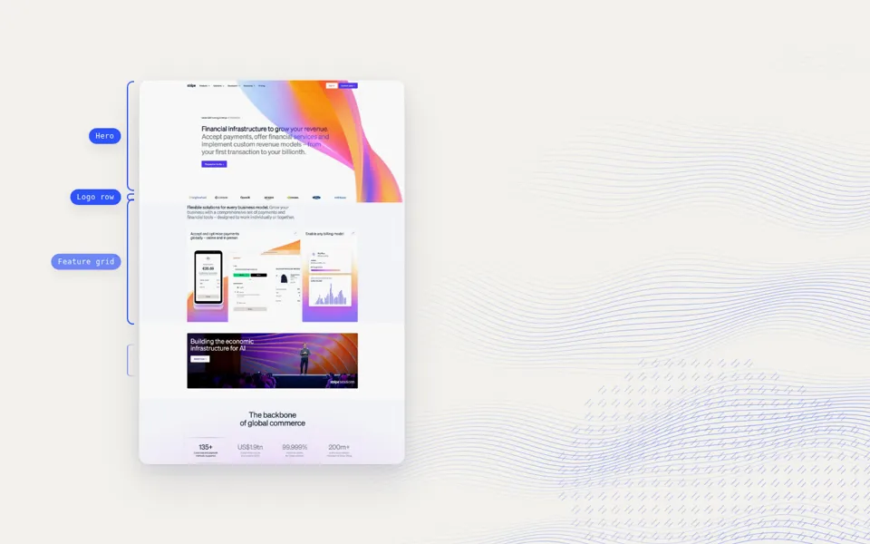<figcaption class="mono">0:02.6</figcaption></figure>
      <figure>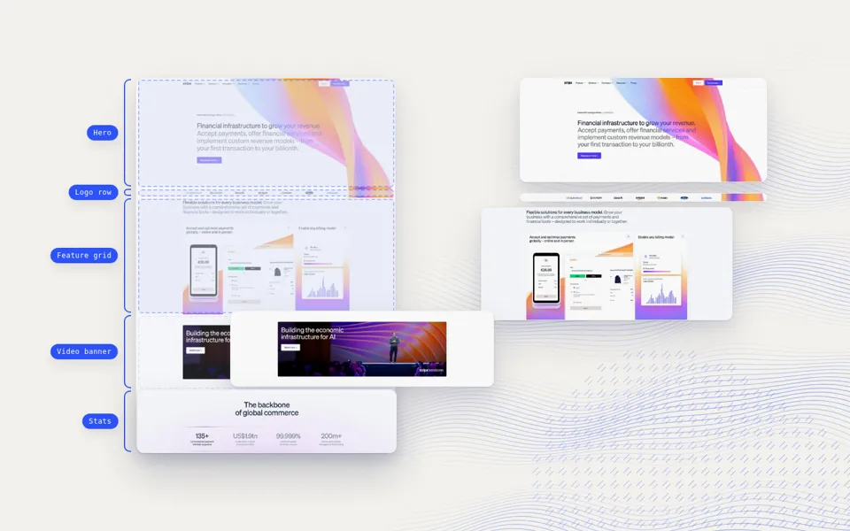<figcaption class="mono">0:04.2</figcaption></figure>
      <figure>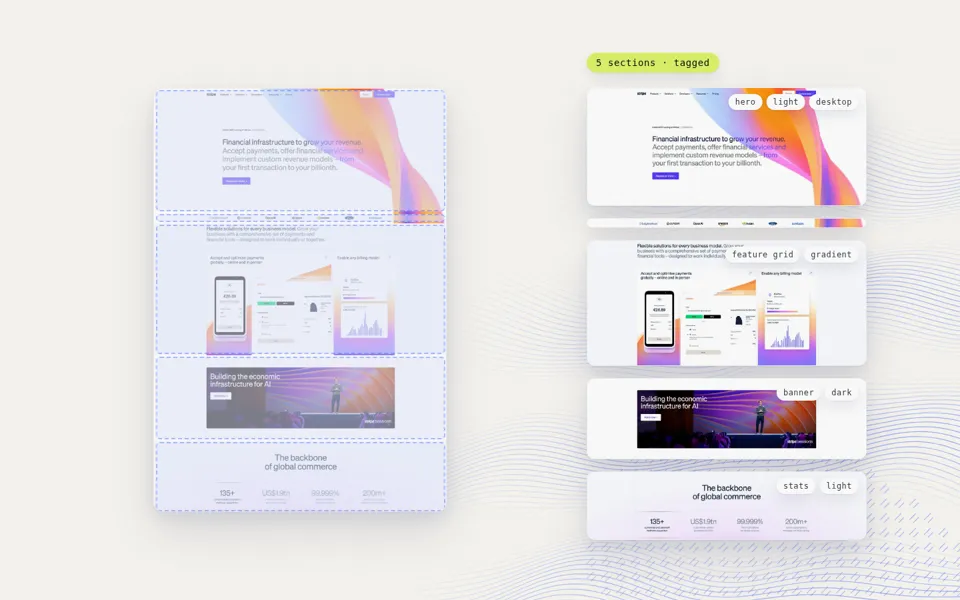<figcaption class="mono">0:05.6</figcaption></figure>
      <figure>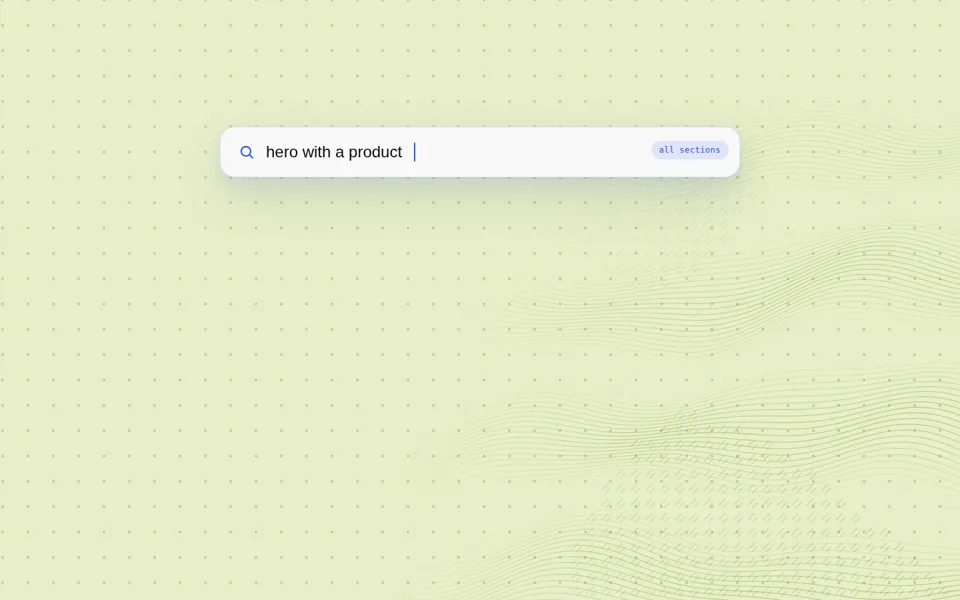<figcaption class="mono">0:08.0</figcaption></figure>
      <figure>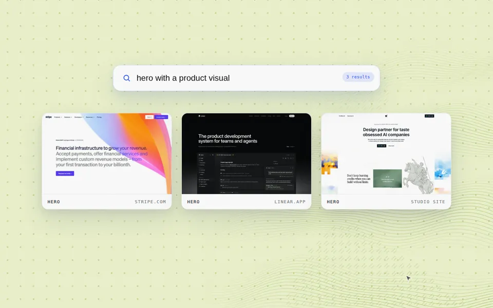<figcaption class="mono">0:09.8</figcaption></figure>
      <figure><figcaption class="mono">0:12.0</figcaption></figure>
      <figure><figcaption class="mono">0:15.5</figcaption></figure>
    </div>
  </section>

  <section class="film" id="compare">
    <div class="fhead"><div><p class="mono">Film 2 · 12 s loop · example row 1</p><h2>Compare heroes, side by side</h2>
      <div class="tags"><span>Pixel-mosaic dissolve</span><span>Annotation pills</span><span>Lilac field + engraving</span></div></div></div>
    <div class="grid2">
      <div class="vid"><video controls muted loop playsinline preload="metadata"><source src="video/compare.webm" type="video/webm"><source src="video/compare.mp4" type="video/mp4"></video></div>
      <div class="tbl"><table>
        <thead><tr><th>Time</th><th>Beat</th></tr></thead>
        <tbody>
          <tr><td>0.0–3.3</td><td>A: Stripe vs B: Linear. Notes pop on each (Headline, Gradient art, Product window).</td></tr>
          <tr><td>3.6–4.4</td><td>B dissolves through pixels into the studio site's hero.</td></tr>
          <tr><td>4.8–7.3</td><td>New notes on B (Serif headline, Engraving art).</td></tr>
          <tr><td>7.6–8.4</td><td>A dissolves into Linear.</td></tr>
          <tr><td>11.2–12.0</td><td>Both dissolve back to the opening pair, so the loop is seamless.</td></tr>
        </tbody></table></div>
    </div>
    <div class="stills">
      <figure>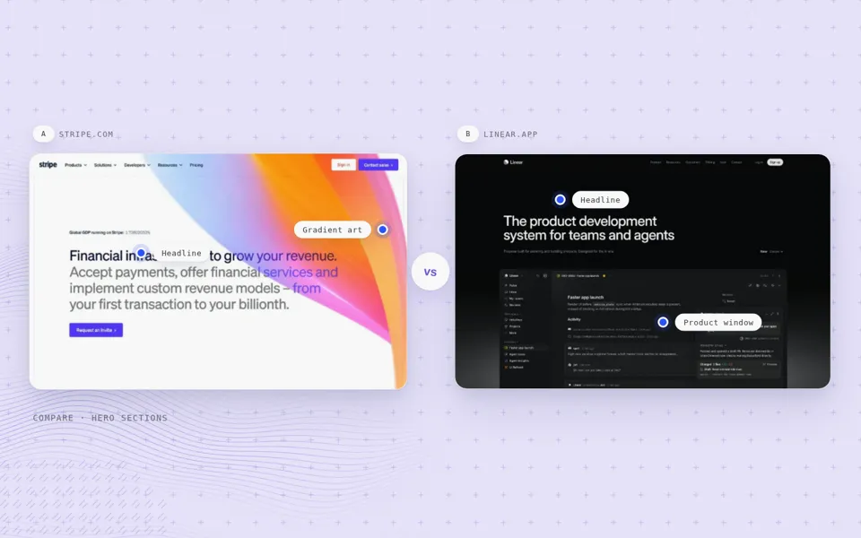<figcaption class="mono">0:02.0</figcaption></figure>
      <figure>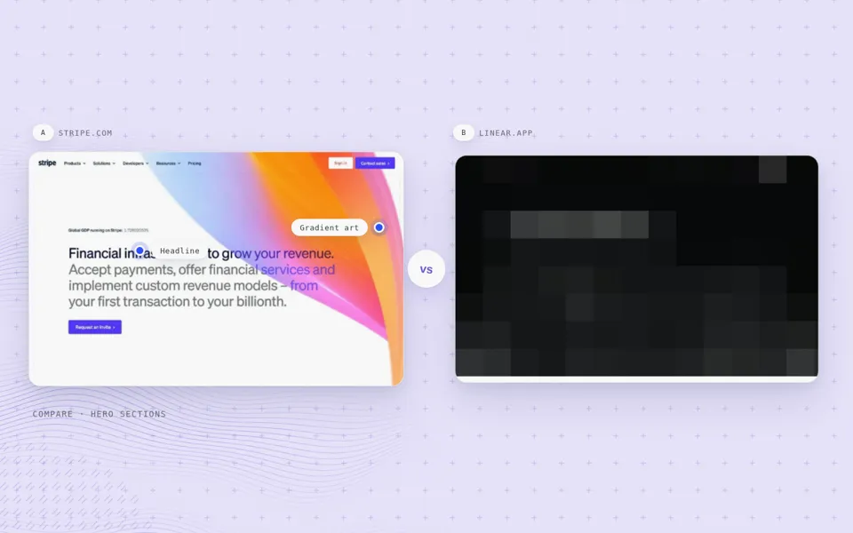<figcaption class="mono">0:04.0</figcaption></figure>
      <figure>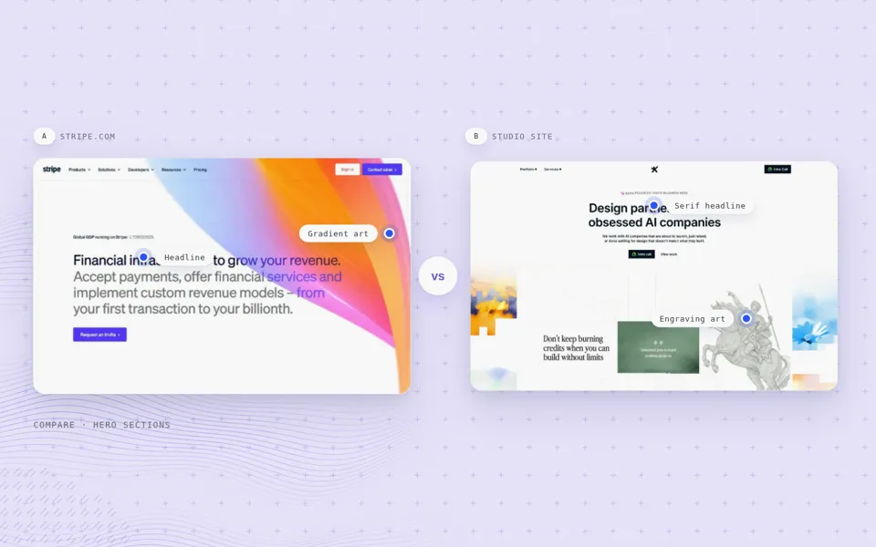<figcaption class="mono">0:06.0</figcaption></figure>
      <figure>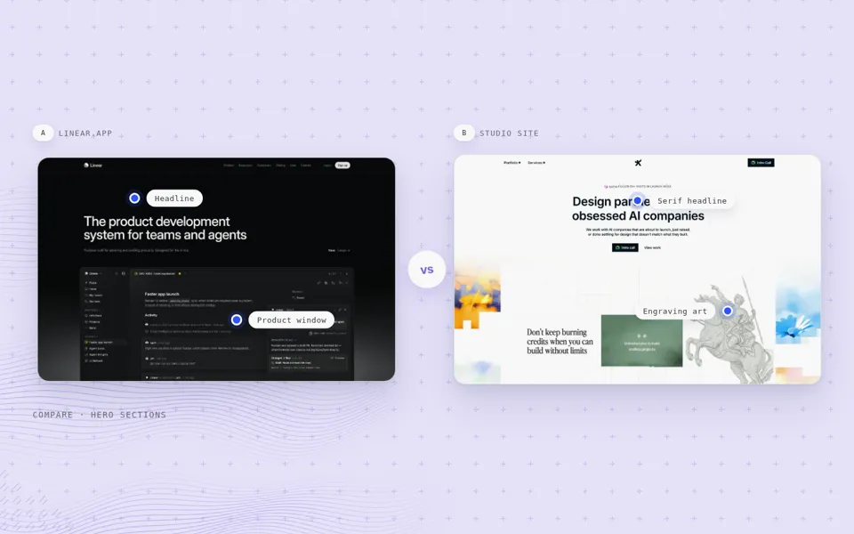<figcaption class="mono">0:09.5</figcaption></figure>
    </div>
  </section>

  <section class="film" id="motion">
    <div class="fhead"><div><p class="mono">Film 3 · 10 s loop · example row 2</p><h2>Study the motion, not just the frame</h2>
      <div class="tags"><span>Player UI with markers</span><span>Hover state</span><span>Silk-line field</span></div></div></div>
    <div class="grid2">
      <div class="vid"><video controls muted loop playsinline preload="metadata"><source src="video/motion.webm" type="video/webm"><source src="video/motion.mp4" type="video/mp4"></video></div>
      <div class="tbl"><table>
        <thead><tr><th>Time</th><th>Beat</th></tr></thead>
        <tbody>
          <tr><td>0.0–4.6</td><td>A library entry plays: the section scrolls inside a soft player; the "Scroll" marker lights on the scrubber.</td></tr>
          <tr><td>4.8–8.4</td><td>The cursor glides onto a feature card; a blue hover ring appears with a "Hover state" marker.</td></tr>
          <tr><td>8.6–10.0</td><td>Scrolls back to the top for the loop.</td></tr>
        </tbody></table></div>
    </div>
    <div class="stills">
      <figure><figcaption class="mono">0:00.5</figcaption></figure>
      <figure><figcaption class="mono">0:03.5</figcaption></figure>
      <figure><figcaption class="mono">0:07.0</figcaption></figure>
    </div>
  </section>

  <section class="film" id="devices">
    <div class="fhead"><div><p class="mono">Film 4 · 10 s loop · example row 3</p><h2>Desktop to phone, in one shot</h2>
      <div class="tags"><span>Segmented tab switch</span><span>Container morph</span><span>Peach field + bracket glyphs</span></div></div></div>
    <div class="grid2">
      <div class="vid"><video controls muted loop playsinline preload="metadata"><source src="video/devices.webm" type="video/webm"><source src="video/devices.mp4" type="video/mp4"></video></div>
      <div class="tbl"><table>
        <thead><tr><th>Time</th><th>Beat</th></tr></thead>
        <tbody>
          <tr><td>0.0–1.6</td><td>Linear's hero at desktop width; the ruler reads 1440 px.</td></tr>
          <tr><td>1.6–3.2</td><td>The tab slides to Phone; the card narrows into a phone and the image becomes the real mobile capture; the ruler counts down to 390 px.</td></tr>
          <tr><td>3.6–6.2</td><td>The phone screen scrolls a little.</td></tr>
          <tr><td>6.2–10.0</td><td>Morphs back to desktop and holds, so the loop is seamless.</td></tr>
        </tbody></table></div>
    </div>
    <div class="stills">
      <figure>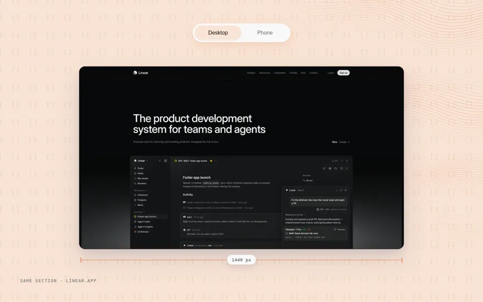<figcaption class="mono">0:01.0</figcaption></figure>
      <figure>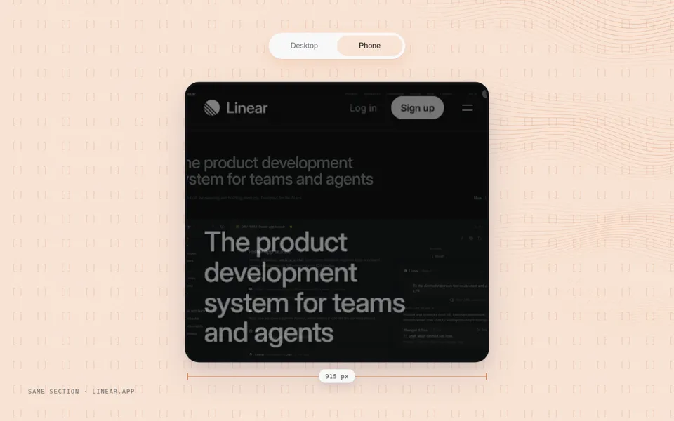<figcaption class="mono">0:02.5</figcaption></figure>
      <figure>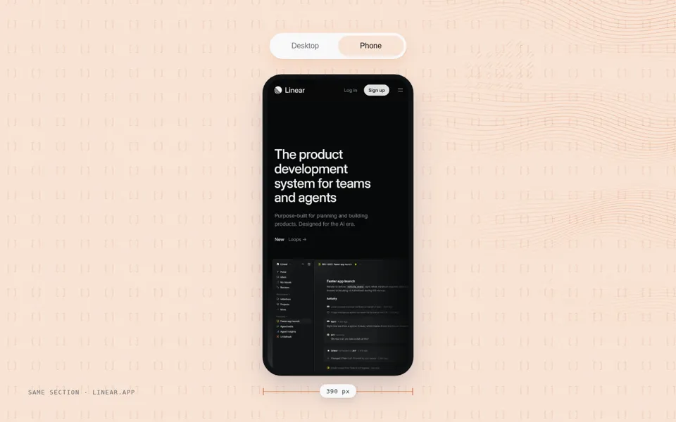<figcaption class="mono">0:04.5</figcaption></figure>
    </div>
  </section>

  <section class="film" id="closing">
    <div class="fhead"><div><p class="mono">Film 5 · 14 s loop · behind the closing call to action</p><h2>Closing wall</h2>
      <div class="tags"><span>Pull-out into a wall</span><span>Navy field</span><span>No text (the page adds it)</span></div></div></div>
    <div class="grid2">
      <div class="vid"><video controls muted loop playsinline preload="metadata"><source src="video/closing.webm" type="video/webm"><source src="video/closing.mp4" type="video/mp4"></video></div>
      <div class="tbl"><table>
        <thead><tr><th>Time</th><th>Beat</th></tr></thead>
        <tbody>
          <tr><td>0.0–6.0</td><td>Starts close on one section and pulls out into a wall of real sections.</td></tr>
          <tr><td>6.0–10.2</td><td>Slow drift across the wall.</td></tr>
          <tr><td>10.2–14.0</td><td>Pushes back into the same section, so the loop is seamless.</td></tr>
        </tbody></table></div>
    </div>
    <div class="stills">
      <figure><figcaption class="mono">0:00.2</figcaption></figure>
      <figure>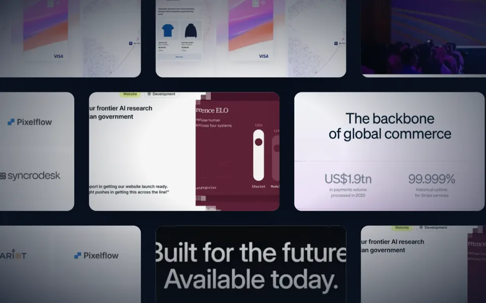<figcaption class="mono">0:03.0</figcaption></figure>
      <figure>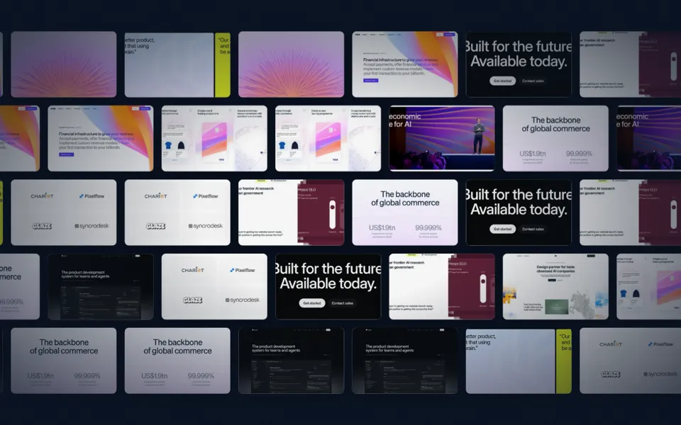<figcaption class="mono">0:08.0</figcaption></figure>
    </div>
  </section>
</main>

<footer class="wrap">Sections shown are from stripe.com, linear.app and Maydit's studio site (to be confirmed). They belong to their owners. Private review page.</footer>
